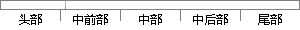

声纹识别的基本原理是利用说话人的语音为每一个说话人建立一个能够描述此说话人特征的模型，作为此说话人语音信号特征参数的标准模板，然后和采样过来的语音信号进行对比，以达到判断说话人身份的目的。
片段位置图

相似结果|
相似片段 1：是为每一个说话人建立一个能够描述这个特定说话人的语音模型，作为这个说话人语音特征参数的标准模板，然后再根据采样而来的语音信号进行说话人识别的过程【7-91。也就是首先从说话人的语音信号中抽取出这个说话人
相似片段 2：与系统结构说话人识别实质上就是一个模式识别的问题，它的基本原理是为每个说话人建立一个能够描述其个体生理特征的语音模型，把这个模型作为识别时的对比参考模型库，然后根据采样得到的个体语音信号进行比对分析，从而
|
※ 片段修改建议 ※
近似词参考：- 别的：此外 另外 其它 其余
- 利用：操纵 哄骗 使用 行使 应用
- 说话：措辞 语言
- 每一个：每个
- 说话：措辞 语言
- 建立：成立 创立 创设 建树 确立 设立建设 竖立 创建 树立
- 能够：可以或许
- 描述：描写 形貌
- 说话：措辞 语言
- 特征：特点 特性
- 模型：模子
- 说话：措辞 语言
- 信号：旌旗灯号
- 标准：尺度
- 信号：旌旗灯号
- 进行：举行
- 对比：对照 比较 比拟
- 达到：到达
- 判断：判定 果断
- 说话：措辞 语言
- 目的：目标
系统自动生成语句：声纹识此外基本原理是操纵措辞人的语音为每个措辞人成立一个可以或许描写此措辞人特点的模子，作为此措辞人语音旌旗灯号特点参数的尺度模板，然后和采样过来的语音旌旗灯号举行对照，以到达判定措辞人身份的目标。
注：本片段修改建议为系统自动生成，仅供参考。